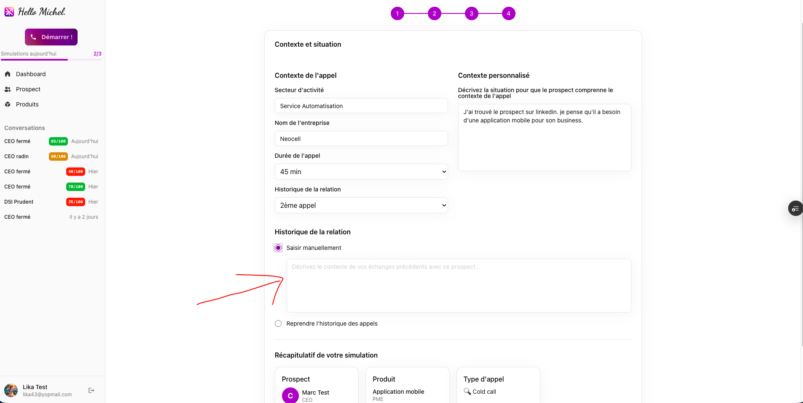
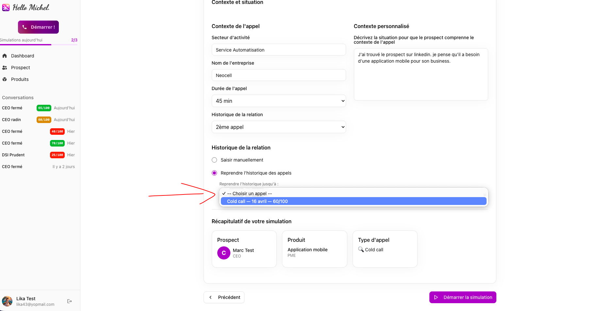
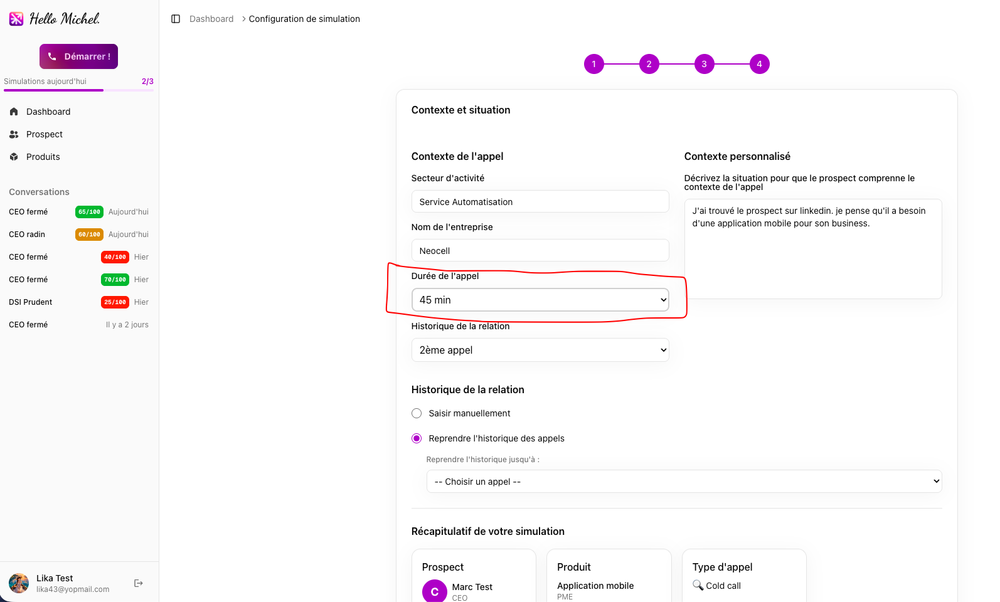
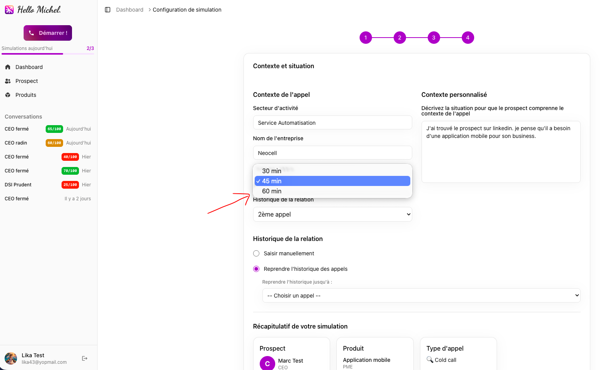
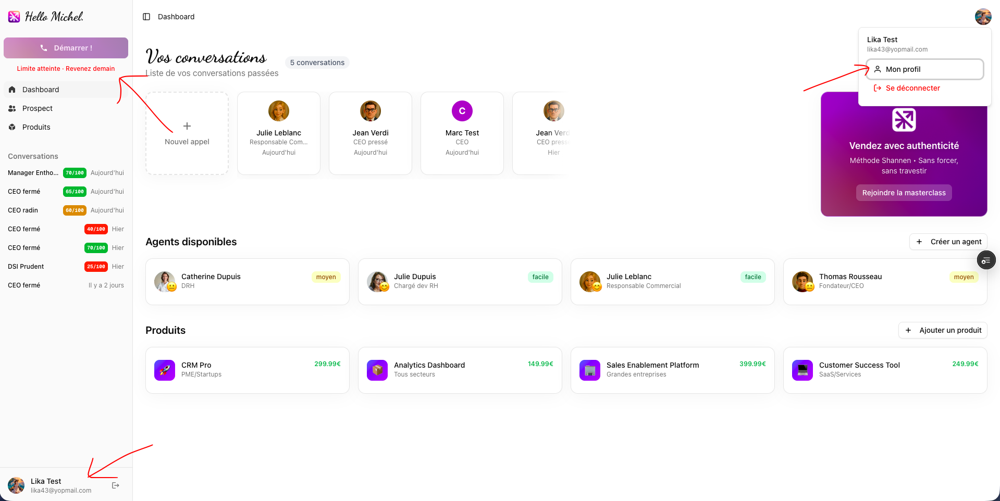

Scope
Cette mission porte sur huit axes d'amélioration de la plateforme NeoCell.
| # | Axe |
|---|---|
| 1 | Historique inter-conversations (R1→R2) — le prospect se souvient des échanges précédents |
| 2 | Durée d'appel configurable — 30, 45 ou 60 minutes |
| 3 | Limite de 3 simulations par jour |
| 4 | Migration de l'infrastructure IA — Amazon Bedrock remplacé par Anthropic |
| 5 | Correction des bugs de connexion — reset password + redirections |
| 6 | Correction de l'identifiant de conversation ElevenLabs |
| 7 | Page Profil utilisateur |
| 8 | Refonte du comportement du prospect IA pour des simulations plus réalistes |
1. Résumé
Huit fonctionnalités ont été développées et livrées dans le cadre de cette mission. 8 points sur 9 sont validés. Un seul reste à tester : la réinitialisation du mot de passe, qui nécessite une action côté Shannen (voir section 5).
| # | Fonctionnalité | Statut |
|---|---|---|
| 1 | Historique inter-conversations (R1→R2) | ✓ Validé |
| 2 | Durée d'appel configurable | ✓ Validé |
| 3 | Limite de 3 appels par jour | ✓ Validé |
| 4 | Migration infrastructure IA | ✓ Validé |
| 5 | Réinitialisation du mot de passe | ⏳ À tester |
| 6 | Identifiant de conversation | ✓ Validé |
| 7 | Page Profil utilisateur | ✓ Validé |
| 8 | Comportement du prospect IA | ✓ Validé |
2. Fonctionnalités livrées
Avant cette mise à jour, chaque simulation repartait de zéro. Désormais, l'utilisateur peut choisir de fournir un contexte avant de lancer l'appel : soit en écrivant librement ce qui s'est passé, soit en sélectionnant des appels passés. Le prospect IA intègre ces informations dans sa façon de répondre.
- 2 simulations avec le même prospect et produit → l'historique s'affiche et est injecté ✓
- Prospect différent ou produit différent → pas d'historique proposé ✓
- Historique saisi manuellement → le prospect jouait bien le contexte de relance post-devis ✓


L'utilisateur choisit la durée maximale de la simulation : 30, 45 ou 60 minutes (45 min par défaut). Un compteur visible pendant l'appel passe à l'orange à 5 min de la fin, au rouge à 1 min.
- Menu déroulant visible, 45 min présélectionné ✓
- Durée transmise correctement à ElevenLabs ✓
- Timer change de couleur aux bons moments ✓


Chaque utilisateur est limité à 3 simulations par jour. Un indicateur dans le dashboard et la barre latérale affiche le nombre d'appels restants. Quand la limite est atteinte, le bouton de démarrage se désactive.
- 3 simulations effectuées → la 4ème est bien bloquée ✓
- Compteur et message "Limite atteinte · Revenez demain" affichés correctement ✓

Amazon Bedrock a été remplacé par une connexion directe à l'API Anthropic (Claude). Le feedback et le résumé générés après chaque appel transitent maintenant par cette nouvelle connexion.
⚠️ Action requise — supprimer toutes les variables et accès AWS Bedrock : variables d'environnement dans Vercel (AWS_REGION, AWS_ACCESS_KEY_ID, AWS_SECRET_ACCESS_KEY) + désactivation des clés IAM dans la console AWS.
⚠️ Action requise — récupérer une nouvelle clé API Anthropic auprès de Shannen. La clé actuelle ne donne accès qu'à un ancien modèle, ce qui limite la qualité des feedbacks et des résumés générés.
- Feedbacks générés correctement (note, points forts, axes d'amélioration) ✓
- Résumés générés et stockés après chaque simulation ✓
- Quand l'utilisateur raccroche → feedback généré ✓
- Quand ElevenLabs raccroche automatiquement → feedback généré ✓
Le code est en place. Pour que les emails de réinitialisation pointent vers le bon site, une variable doit être configurée dans Vercel.
L'identifiant enregistré après chaque appel ElevenLabs était incorrect. Corrigé — chaque appel est maintenant correctement référencé, ce qui permet de retrouver les transcripts directement depuis ElevenLabs.
- Vérification en base après plusieurs appels → identifiant de type "conv_xxx" bien enregistré ✓
Nouvelle page profil : photo de profil, prénom/nom, secteur et entreprise par défaut (pré-remplis à chaque simulation), changement de mot de passe.
- Upload de photo → s'affiche dans la sidebar et le header ✓
- Secteur/entreprise sauvegardés → pré-remplis à l'étape suivante ✓
- Changement de mot de passe → reconnexion OK ✓

Le prospect IA a été entièrement revu. Il réagit de façon progressive selon la qualité du discours : froid au départ, il peut s'ouvrir si l'accroche est bonne, ou raccrocher si le vendeur est mauvais. Le comportement varie selon le type d'appel. Les réponses sont courtes, naturelles, sans formules robotiques.
- Cold call → résistance progressive bien présente ✓
- Follow-up → le prospect reconnaît le contexte de relance ✓
- Raccrochage automatique si commercial trop mauvais ✓
- Absence de formules IA génériques ✓
- Réponses courtes, en français uniquement ✓